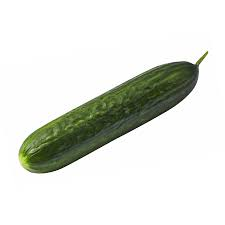
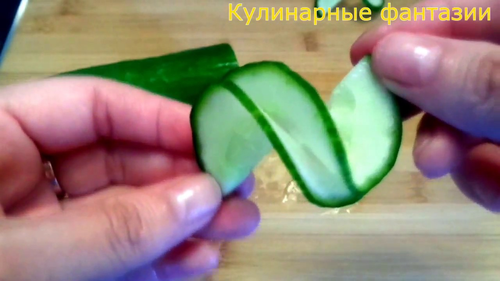
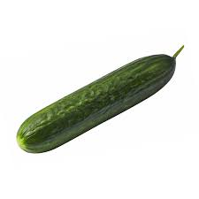
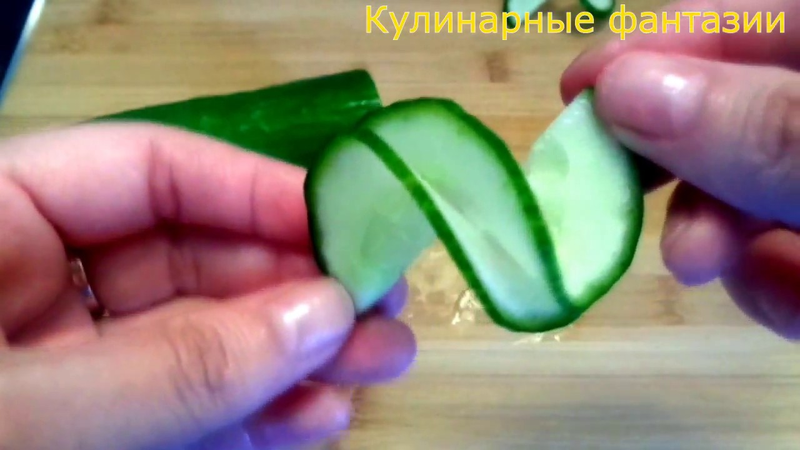

Вторая страница моего сайта
Я только начал изучать HTML
Немного полезной информации
HTML — стандартизированный язык разметки документов для просмотра веб-страниц в браузере. Веб-браузеры получают HTML документ от сервера по протоколам HTTP/HTTPS или открывают с локального диска, далее интерпретируют код в интерфейс, который будет отображаться на экране монитора.
 Главная страница сайта
Главная страница сайта
Согласно этимологическому словарю Фасмера, название заимствовано из ср.-греч. ἄγουρος («огурец»), которое восходит к ἄωρος («незрелый»). Этот овощ, поедаемый в незрелом виде, нарочито противопоставляется дыне — πέπων, которую едят в зрелом виде[2].
Brawl Stars, как и многие другие киберспортивные состязания, игра, в которую очень легко начать играть, но в которой невероятно сложно овладеть всеми приёмами и примочками. Командная игра и проработанная стратегия здесь являются ключевыми, так как некоторые режимы требуют, чтобы вы защищали определённых членов вашей команды, что требует большой координации для достижения успеха. Так что действительно лучший способ изучить сложные части игры - это найти команду, с которой можно регулярно играть, и приступить к работе над коммуникацией и налаживанию правильной связи между игроками.
Захват кристаллов (англ. Gem Grab) — режим 3 на 3 игрока, где нужно собирать кристаллы, время от времени появляющиеся в центре карты. При убийстве противника игроком, все кристаллы противника выпадают на землю и могут быть подобраны любым другим игроком. Индикаторы обеих команд отображают сумму кристаллов, имеющихся у всех их участников на данный момент. Задача каждой команды — собрать 10 или больше кристаллов, после чего продержать их у себя до конца игры. Когда одна команда соберёт 10 кристаллов, начнётся отсчёт до конца игры. Этот отсчёт можно прервать, если отобрать у вражеской команды нужную часть кристаллов, убивая её участников, либо же собрав равное с вражеской командой количество кристаллов. По прошествии отведённых до конца 15 секунд победа присуждается команде с наибольшим количеством кристаллов[4][5][6].
школа это ад
 


